<app-scroll-to-top></app-scroll-to-top>
<footer class="container-grid sektion9 footer">
  <div class="container-grid wrap-banner">
    <div class="container-grid motesplats">
      <a routerLink="/motesplats" class="link-container link-container-8" title="Mötesplats barnkultur: Om att arrangera scenkonst utomhus.">
        <h5 class="motesplats-heading"><span class="heading-text-3"><span class="heading-text-2">Mötesplats barnkultur:</span> <br>
        </span><span class="heading-text-5"><span class="heading-text-4">Om att arrangera scenkonst utomhus. <br>”Väder och vind, eller Vad tusan händer?”</span>&nbsp;</span><br><span class="heading-text-1">Se mer &gt;&gt;</span></h5>
      </a>
    </div>
    <div class="container-grid kulturkatalogen">
      <a href="https://www.vgregion.se/f/kulturutveckling/regional-utveckling-och-tjanster/barn-och-unga/kulturkatalogen-vast/" class="link-container link-container-9" title="Till Kulturkatalogen Väst" target="_blank">
        <h5 class="kulturkatalogen-heading"><span class="heading-text-6">Här kan du ta del av</span> Kulturkatalogen Västs <span class="heading-text-7">fulla utbud.</span> &gt;&gt;</h5>
      </a>
    </div>
  </div>
  <div class="container-grid container-1">
    <div class="responsive-picture picture-2">
      <picture>
        
      </picture>
    </div>
    <div class="responsive-picture picture-3">
      <picture>
        
      </picture>
      <span style="color: transparent;">Design: Thomas Larsson, Utveckling: Andreas Josefsson, App version: 1.0.1</span>
    </div>
  </div>
</footer>
